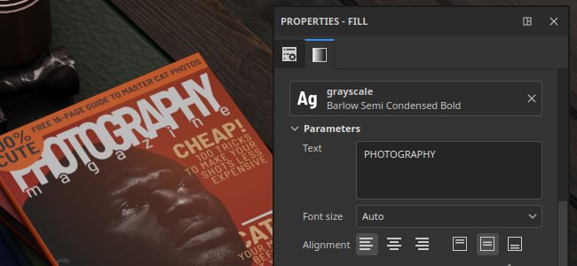
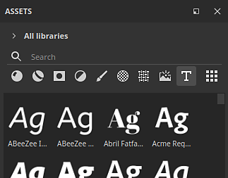
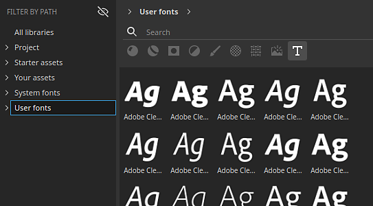
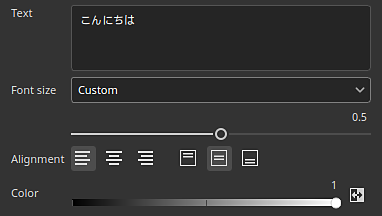
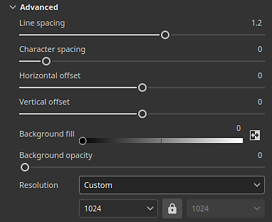

Windows
Text resource

The Text resource in can be used to write text into textures with the use of specific font files. Several parameters are available to adjust the look of the final text drawn.
Browsing fonts
To browse the available font files, simply click on the font filter (the T button) in the Assets window:

Font can also be filtered by paths depending on where they are located on the system:

The font locations available depend on the current operating system:
|
|
|
|
MacOS |
|
|
Linux |
|
Importing fonts
Fonts can be imported manually or put into an existing Painter's library like any regular resources. To do so see the import documentation.
Painter support both .ttf and .otf font formats.
Note
If a resource fails to load/import with the error message "cannot be imported because of the font's licensing restriction" it means it cannot be used by Painter. Only font marked as embedable in their metadata can be used.
Using a font as a text resource
A texture resource works like other resources (images or Substance materials for example) and can be used in brush parameters, fill projections or Substance image inputs.
To create a text resource simply add a font into a resource slot. Drag and dropping a font in the viewport is also possible.

Text resource parameters
A text resource has the following basic parameters:

|
Parameter |
Description |
|---|---|
|
Text |
Text to be rendered.
Note
The text field in the interface uses a generic font with a wide range of characters which may create discrepancy between what was typed in the field and what the selected font is be able to render in the texture. |
|
Font size |
Specify the mode used to compute the font size. Available modes are:
|
|
Alignment |
Control the vertical and horizontal alignment. Use the buttons to choose which mode to use. |
|
Color |
The color the rendered text. This setting may be grayscale if the text resource is used in a mask or a grayscale channel. |
More advanced parameters are also available:

|
Parameter |
Description |
|---|---|
|
Line spacing |
Distance between lines of text (“leading”) relative to the font size. |
|
Character spacing |
The amount of space between adjacent characters relative to the font size. Can be negative to subtract spacing. |
|
Offset |
Horizontal and vertical offset of the text. Normalized to the font size. |
|
Background fill |
Color of the background behind the text. |
|
Background opacity |
How much of the background color is visible. |
|
Resolution |
Specify the mode used to compute the size of the texture used to render the text. Available mode are:
|